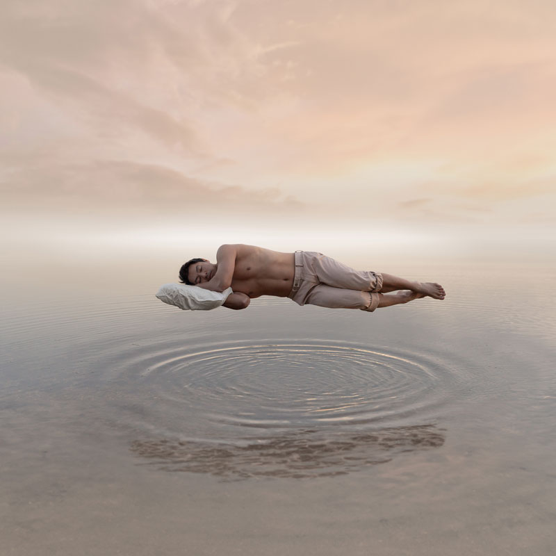

Breaking the Stigma: A Visual Journey into Men's Self-Care
A curated collection of concept photography images, exploring self care strategies to improve men's mental health.
A curated collection of concept photography images, exploring self care strategies to improve men's mental health.
"A groundbreaking concept photography campaign exploring self-care strategies for men’s mental health.”
Combined with external support from friends, family, or professionals, effectively addressing and preventing mental health challenges such as anxiety or depression demands a commitment to personal growth and continuous efforts towards self-improvement.
Without a steady commitment to self-care, the path to recovery often remains elusive.
This year’s February campaign seeks to draw attention to the importance of men’s mental health, by visually illustrating the profound impact of personal dedication and self-care on our well-being.
Positive thinking”
Negative thinking
-snip-snip-snip-
‘Plant flowers in your garden, not weeds.’
That is a big part of self care for me now.
I write in my journal now. I have two actually, one dedicated to dreams and one for gratitude/reflecting. It helps capture some of my thought patterns and apply what my therapist has taught me, and I also take some of these notes to our sessions.
Adding gratitude to my day makes me more appreciative of what I have in my life. Reflecting after thinking negatively about a situation helps me look at things from a different perspective. For example, was someone actually acting a certain way or thinking a certain way about me, or was I just assuming the worst-case scenario? Writing also allows me to better explore more of my feelings and emotions and get them out in a comfortable and healthy way.
-snip-snip-snip-”
– Santiago Garfias-Miranda, artist, Oregon, USA.
Too Close to Touch
It’s an unfathomable thought, to lose your partner. It’s one of my biggest fears in life, and I can’t imagine the pain it will cause. The horror of losing them to themselves, however, would be more than traumatic.
I wanted to show that even though men can be in happy, fulfilling relationships, that dark thoughts and feelings can bubble beneath the surface. That a spouse can do everything in their power to love and nurture, and yet the man can still go under. 
But I want to stress that if anyone has experienced this:
Your love was the most powerful grip in the world, and you can’t blame it if depression caused it to slip.
My condolences to anyone in this world who has lost someone to suicide, partner or not. I am so sorry.”
Till We Have Faces”
This is Not Hollywood”
Suffocate”
Sufferer”
Seven
I’ve only seen my father cry once: When my grandmother (Mema) died. I was only 16, and up to that point, I’ve never seen him vulnerable. My pops is one of the most caring, strong, and influential father figures anyone could’ve asked for, and over the years, he has grown closer to his feelings. However, I noticed men in his generation have difficulties expressing their emotions due to the cultural notion of it being a sign of weakness, especially as young men.
How many tears (raindrops) have these men shielded themselves from over the years? In this day and age, do they continue to hold up that facade, or do they finally lower it, and allow themselves to grieve? Will they even know how to remove that protection, or will the defense-mechanism remain forever? Because the splashes of those emotions are felt by others.üíß
Wanna know a terrifying statistic from the CDC? The highest suicide rate amongst men is from the ages of 75 and up.[1] However, I believe society is learning to accept vulnerability from men, and that vulnerability is a strength, not a weakness.”
Exile”
– Quinn Miller, photographer Florida, USA.
Heal
Sometimes we need to take that moment to dive into our inner selves, where we feel the most peace and quiet. 
For me thats always been the water. A place to reflect and wash away things that have been hurting, affecting or weighing on me. 
I do not have a river to push emotions down. I have an endless sea beneath me with everything I’ve ever felt. My job is to bring it into my space, purify it, then let it sink.‚Äù
Healing
A part two to ‘Heal’
As we heal we begin to see and feel more of the light, even though healing is often very dark, scary and alone. But when you do start to pick your head up you know you’re going in the right direction.‚Äù
– Paul Warrenn, creative photographer, Long Island, New York, USA.

What do a large silk sheet and body suit, hockey skates and sticks, touring skis, snowshoes, climbing rope, ice screws, and camera gear have in common? Just another mountain therapy day in the Canadian Rockies with friends. Today, we head into our favourite ice cave to shoot, of all things, an aerialist performing at the mouth of the cave, a few hockey shots and, of course, anything else that is cool in the cave. 
Why are mountain therapy days like this one so special to me? Quite frankly, my sanity!!! Whether it is the fresh mountain air, needing to focus on the task at hand to ensure myself and my friends return home safely, the exercise (some days this old body feels it), enjoying the beauty, calm, mystery and wonder of the moments provided by nature, capturing these moments, the massive sense of accomplishment, and/or the primary goal spending time with fantastic friends, mountain therapy days are a crucial ingredient in my ability to enjoy life each and every day.”
– Lee Nordbye, fine art photographer, Canmore, Alberta, Canada.


Yoga! The true form of letting go of all expectations and judgment of oneself. Purely moving by breath and allowing your mind to be free and in the moment! Not comparing yourself to anyone including the person you were yesterday or who you want to be tomorrow!
As I practiced among these ancients, I thought on how bent and gnarled their trunks and branches are. How their broken branches or holes came to be. How their imperfections make them so beautiful. The environment they grow in is so harsh and jagged and that is what makes them the way they are. 
I wonder how they must feel on a sunny day with no wind to push them or sway them. Are they grateful for the sunny days and wish for more of them, or do they just appreciate them and be grateful they have those seldom sunny days and for the environment they live in – that make them gnarled and bent and truly special.
I can relate to these trees as I practice, my form is not precise as I want it to be and surely not as precise as so many yogis that inspire me. My branches are bent and gnarled as well when I hold poses and I allow myself to just accept this is how I bend. I would love to bend more and my journey will hold endless pursuit for my goals. My body has been on a journey and my imperfections are my story as much as these trees have stories. These trees are so much like a yoga class filled with amazing yogis. Each one bent in poses and all beautiful. Some bent slightly and some bent to extremes. Some gnarled and folded. All present and in the moment of what they are in.
I want to be like these trees as they relentlessly grow and refine in their beautiful shapes. Even when they are knocked over they still find a way to grow as this tree I am flowing beside is still alive and the branches are strong. The imperfection is its strength and its beauty!
I find peace practicing around the world in locations such as this as it truly inspires me and I feel their love for the sunny days but so appreciative of the hardened environment that makes them so special and beautiful.”
– Kris Andres, photographer, Banff, Alberta, Canada.
Two things in my life have always given me the opportunity to find balance and to practice self care.
The first, and one that has been there for most of my life, is spending time in nature. I find trees to be like emotional sponges, soaking up the negative air that sometimes gets stuck in my lungs. When I walk amongst trees, I allow myself to wander, to notice, to digest, to defuse, and to let go of everything weighing me down, I let the leaves and branches and roots take all that I’m carrying and I leave feeling brand new, like a tree reborn each season.¬†
The second, photography, has allowed me to find a creative outlet for all the things that my mind gets stuck on, it lets me explain myself in a way that words often fail to do and it also connects me with other artists that are able to communicate through this visual recognition, much like trees can communicate through their root systems so can artists, communicate through what pushes them.”
– Joel Robison, photographer, Aldershot, England.


I’m a photographer based in Wales, but my real passion unfolds beyond the lens: exploring nature with my two adventurous sons.
For me, the adventures are about disconnecting from screens and reconnecting with our natural environment, without modern pressures or distractions and just enjoying being in nature. In this age of constant digital noise, I want my boys to learn the forgotten art of being present. Each adventure becomes a lesson in mindful awareness, physical & mental clarity, and fosters a love of our world. I use my camera to capture these moments and document our exploration, and now, my sons are even starting to enjoy photography too!”
– Ben Hughes, photographer, Wrexham, Wales.

Fitness (CrossFit) has really taught me a lot about mind-body connection and discovering what I am capable of. I love the mood boost and mental clarity that follows a good workout. Prioritising sleep and nutrition is integral to my daily self-care routine. Keeping fit and healthy has proven invaluable in effectively helping me manage stress and improve my overall well-being.”
– Adam Hague, artist/photographer, Portsmouth, England.
Feeling inspired? Learn practical tips and strategies and find out what works best for you, with our ThriveWell Self Care Toolkit: Your Launch Pad to Better Mental Health.
Reference
Disparities in Suicide  | Suicide Prevention | CDC. (n.d.). https://www.cdc.gov/suicide/disparities/index.html
Move for something that matters! Between June 1–15, walk, run, bike, or hike for men's mental health. ​
​Let's Step Up for our dads, brothers, partners, sons, uncles, friends, co-workers — and ourselves.